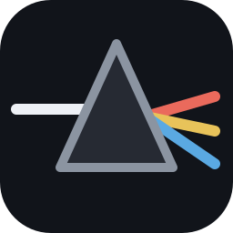

Des dossiers sans fin
À trier, À trier 2, Nouveau dossier (37)… Vous savez ce que vous avez. Vous ne savez plus où.

18+Prisme est un logiciel conçu pour organiser des collections de vidéos et de photos pour adultes. Ce site ne contient aucune image explicite, mais s'adresse exclusivement aux personnes majeures.
En entrant, vous confirmez être majeur·e selon la loi de votre pays.
Prisme est le logiciel conçu pour trier, organiser et savourer une collection adulte, vidéos comme photos. Dix aperçus d'un seul coup d'œil, une touche pour ranger, le suivant s'affiche aussitôt. Et tout reste chez vous.
Des années de téléchargements, des disques qui débordent, des noms de fichiers qui ne veulent rien dire. Les lecteurs vidéo classiques n'ont jamais été pensés pour ça.
À trier, À trier 2, Nouveau dossier (37)… Vous savez ce que vous avez. Vous ne savez plus où.
Un nom de fichier ne dit rien. Il faut lancer chaque vidéo, avancer, fermer, recommencer. Des soirées entières perdues à chercher.
La même scène en 720p, en 1080p et en 4K, sous trois noms différents. Des centaines de gigaoctets qui dorment pour rien.
Une porte qui s'ouvre, un écran partagé, un lecteur qui retient l'historique. La discrétion n'est pas un détail.
Prisme a été pensé pour ces quatre problèmes.
Voici la fiche de Prisme. Appuyez sur 6 7 8 pour ranger, Suppr pour écarter, Espace pour passer, 1 pour mettre en favori. Ou cliquez sur les boutons.
Prisme n'est pas un lecteur de plus. C'est un outil dédié, affiné geste après geste, pour qu'entre l'envie et l'image il n'y ait plus rien.
Chaque dossier de rangement reçoit sa touche. Une touche pour mettre en favori, une pour écarter, une pour passer : une main choisit pendant que l'autre range, et la copie se fait en arrière-plan. Vous n'attendez jamais.
Chaque vidéo se résume en dix images réparties sur toute sa durée. Survolez-en une : l'extrait démarre à cet instant et tourne en boucle.
Clic droit sur l'image : vos destinations s'ouvrent en cercle autour de la souris, comme dans un jeu. On range sans arrêter la lecture.
Clic maintenu et molette : l'image s'agrandit jusqu'à six fois, centrée exactement sous la souris. Un clic droit la remet à sa taille.
Prisme lit les noms de vos fichiers, les découpe intelligemment et en tire des catégories, sans rien saisir. Le jargon technique (1080p, x264, web…) est écarté, casse et accents ignorés. Ajoutez vos propres mots-clés quand vous le souhaitez.
Un seul champ, une syntaxe simple et puissante. Tolérante aux fautes de frappe, elle s'enregistre pour être rappelée d'un clic.
Une étoile sur une vidéo, une photo ou un dossier, et il rejoint vos favoris. Un onglet dédié, juste à côté du Mur, les réunit tous. Ils vous suivent même quand vous déplacez les fichiers.
Une vidéo au hasard dans toute la collection, sans jamais repasser deux fois la même avant d'avoir tout vu. Le mode Rafale enchaîne tout seul.
Un filtre ne garde que les vidéos ni triées ni regardées. Les pépites oubliées au fond du disque refont surface.
Vous ouvrez un dossier, une page web ? La vidéo passe dans une fenêtre toujours au premier plan, sans cadre, aux proportions de l'image. Déplacez-la où vous voulez, donnez-lui la taille que vous voulez, jusqu'au plein écran. Elle reprend à l'instant exact, et vous pouvez même y trier.
Le Mur affiche de deux à dix vidéos côte à côte, qui jouent toutes en même temps. Choisissez combien, choisissez le format, et gardez celles qui vous plaisent. Essayez ci-dessous.
Un clic, et Prisme passe de vos vidéos à vos photos. Le même tri éclair, les mêmes favoris, les mêmes destinations, et des outils pensés pour l'image fixe.
Prisme repère les copies, même renommées, même réencodées dans une autre qualité. Dans chaque groupe, le meilleur exemplaire est mis en tête : la plus haute définition, puis le plus gros fichier.
Depuis votre téléphone, où que vous soyez, parcourez votre bibliothèque et regardez vos vidéos sans rien télécharger. Scannez le QR code, entrez votre mot de passe, c'est tout.
Scannez pour ouvrir votre collection sur ce téléphone.
Une touche, et Prisme disparaît derrière une page d'utilitaire parfaitement banale. Le son se coupe, la lecture se met en pause. Une autre touche, et tout revient exactement où vous l'aviez laissé.
Prisme se masque aussi quand vous êtes dans un autre programme, sans jamais revenir au premier plan.
Vos vidéos, vos photos, vos favoris et vos recherches restent sur votre ordinateur. Rien n'est envoyé, rien n'est analysé à distance.
Favoris, index et vignettes vivent à part, dans les données de l'application. Vos dossiers restent propres.
Mettez certains dossiers de côté : ils disparaissent partout à la fois, listes, mots-clés, Mur, doublons et accès à distance.
Prisme a été éprouvé sur de vraies collections, stockées sur NAS. Il se souvient de tout ce qu'il a déjà vu, prépare les aperçus à l'avance et ne relit le disque qu'en arrière-plan.
Aller vite suppose de pouvoir se tromper. Chaque décision est réversible, chaque transfert va jusqu'au bout.
Le dernier déplacement, la dernière suppression, le dernier renommage : un geste, et tout revient à sa place.
Ce que vous écartez attend dans une corbeille dédiée, d'où il revient d'un clic, jusqu'à ce que vous fermiez Prisme.
Un fichier du même nom existe déjà à destination ? Le nouveau est simplement suffixé. Rien n'est remplacé.
La copie continue pendant que vous triez, dans l'ordre de vos décisions. À la fermeture, Prisme attend que tout soit arrivé.
Déplacez un dossier, renommez une vidéo : elle reste dans vos favoris. Ils sont sauvegardés à chaque lancement.
Donnez enfin un vrai nom à vos fichiers, sans quitter la vidéo. L'extension est préservée automatiquement.
Essayez Prisme gratuitement pendant 14 jours, avec toutes les fonctionnalités. Vous ne payez que s'il vous convainc.
Toutes les fonctionnalités, sans limite, pour vous faire votre idée.
Aucune carte bancaire demandée
L'abonnement complet, avec toutes les nouveautés dès leur sortie.
Facturé 79 € par an · résiliable à tout moment
Un seul paiement, à vous pour toujours. Offre de lancement.
Licence perpétuelle
Une autre question ? Écrivez-nous, nous répondons à chaque message.
Non. Prisme fonctionne entièrement sur votre ordinateur. Vos vidéos, vos photos, vos favoris, vos recherches et vos vignettes ne quittent jamais votre machine, et il n'y a aucune télémétrie.
La seule exception est celle que vous choisissez : l'accès à distance, que vous activez vous-même, protégé par votre mot de passe et coupable en un clic.
Uniquement quand vous le lui demandez : déplacer, renommer ou écarter une vidéo. Tout le reste (favoris, index, vignettes) est rangé à part, dans les données de l'application. Rien n'est écrit dans vos dossiers.
Et chaque action peut être annulée.
Oui, et c'est même là que Prisme fait la différence. Il a été optimisé et mesuré sur des collections stockées sur NAS : ce qu'il a déjà vu s'affiche instantanément, les aperçus sont préparés à l'avance, et le disque n'est relu qu'en arrière-plan.
Pour les vidéos : MP4, MKV, MOV, AVI, WMV, M4V, WEBM et FLV. Pour les photos : JPEG, PNG, WebP, HEIC, GIF, BMP et TIFF. La définition de chaque fichier est détectée automatiquement.
Oui. Un clic fait passer Prisme de vos vidéos à vos photos, avec le même tri, les mêmes favoris, un diaporama et le Mur. Les deux collections restent séparées : chacune a ses dossiers, ses favoris et ses mots-clés.
Prisme est une application Windows (Windows 10 et 11). Une carte graphique récente n'est pas nécessaire : un ordinateur ordinaire suffit.
Une seule touche remplace instantanément Prisme par une page d'utilitaire parfaitement banale, coupe le son et met la lecture en pause, même si vous êtes dans une autre fenêtre. Au retour, tout reprend exactement où vous l'aviez laissé.
Rien d'automatique : aucune carte bancaire n'est demandée pour l'essai, donc aucun prélèvement surprise. Si Prisme vous plaît, vous choisissez une formule et retrouvez tous vos réglages et vos favoris.
Un libellé neutre, qui ne mentionne ni le contenu ni la nature du logiciel. Votre facture est disponible dans votre espace client.
Non. Prisme est un outil d'organisation et de lecture pour la collection qui vous appartient déjà. Il n'héberge, ne vend ni ne distribue aucun contenu.
Installez Prisme, pointez votre dossier, et découvrez en quelques minutes ce que vous aviez oublié posséder.